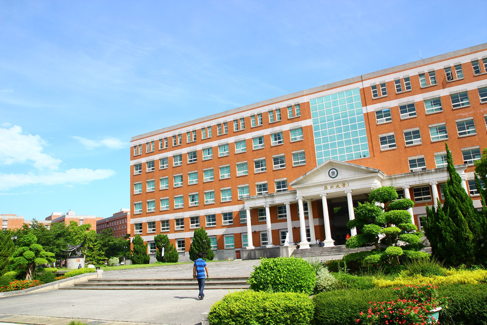

亞洲大學
亞洲大學
希臘羅馬式建築典雅無比 --- 校園整體設計，建築風格一致，賞心悅目，綠意盎然，實為求學研究的夢中美境。
安藤忠雄大師設計「亞洲大學美術館」 --- 大師為本校設計其在台灣之第一棟建築，三個三角形的出色結構，建成後將為中台灣新景點。
建築中庭、綠意盎然 --- 人文暨管理大樓、健康大樓及資訊大樓，中庭層層花壇皆植垂生花草，綠掩廊廳，心曠神怡。 
荷池涼亭、偷閒去處 --- 有「太極湖」、「第一荷花池」及「水利公園」三個幽美荷花池及涼亭，是休閒冥想的好去處。
亞洲大學連結